L’atelier RUX (rethinking UX)
est de
réaliser une interface adaptée et
compréhensible pour
l’utilisateur, pour une
navigation facile et rapide”
Le
directeur de la Haute école
Albert Jacquard nous à
donner une mission !
Repenser notre cours de récré
Notre
budget est limité à
200k€
+-
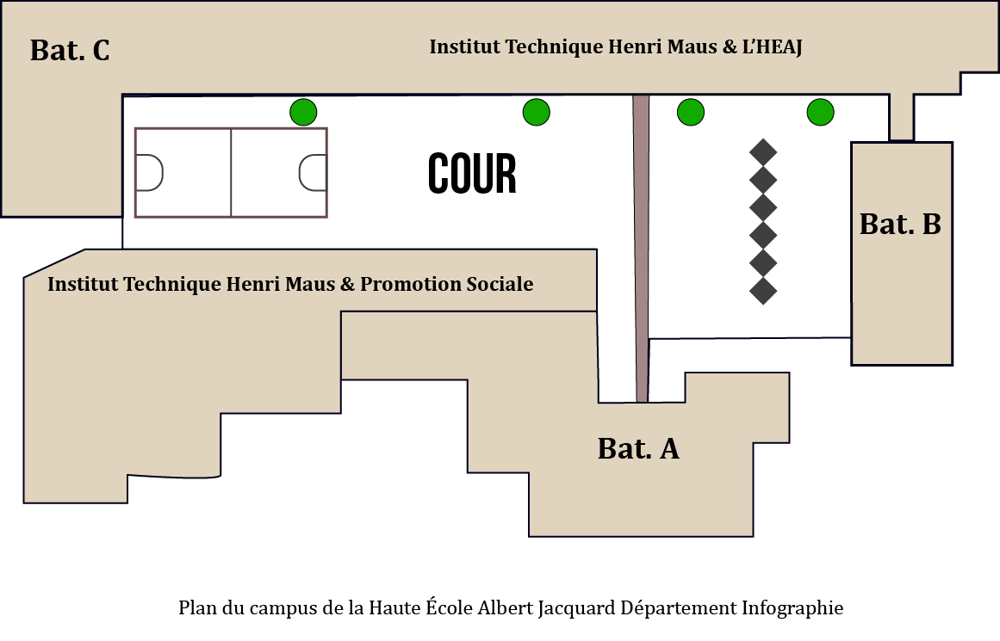
schéma illustré de la cour
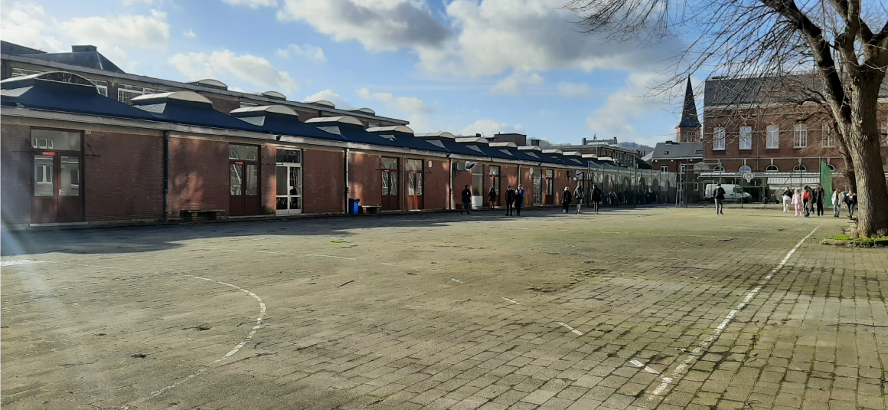
Photo prise de la cour "plan large"
1 Création
de l'Équipe
On choisit quel nom pour la Team ? (Célia)
— Les Rases moquettes en référence au fait qu’on va réajuster la
cour
! (Pina)
— Hahahahaha, allez ! (Amandine, Célia, Jessy, Justin et Pina)
2 Prémices
Et c’est à ce moment
précis que l’on a mis la
première vitesse.
Notre
tout nouvel atelier consistait à
repenser l’usage de la cour en proposant des moyens d’agencement. Pour réaliser cela, on a eu recours à
notre stratégie d’apprentissage !
La fusion d'un travail collaboratif, des travaux de recherches qui nous
permettent d’aller découvrir le monde
extérieur et nos utilisateurs et le travail pratique, ainsi que la partie
individuelle pour mettre en œuvre notre
site web, qui représente le fruit de notre travail. On réalisera alors notre étude de cas ! Notre
Case-study pour
faire plus élégant.
3 Prémices
bis
La première étape à été
d'observer la
cour afin d'avoir un visuel plus
globale sur la cour.
Une fois terminé, la
classe qui était bavarde se
retrouve tout de suite dans un silence le plus total.
J'écrivais beaucoup de questions que je pourrais poser au directeur. Seulement les questions n’ont pas
été posées dans un ordre précis.
Le directeur, celui qui
était censé répondre à
nos questions, a
commencé à expliquer la situation. En faisant cela, il a transformé nos questions en réponses.
Il nous a expliqué son point de vue, sa vision des choses. Il
avait en tête de créer un axe qui nous permettrait de nous diriger plus facilement vers le Bâtiment
A, B et C. En gardant bien en tête que bien souvent, manque de place oblige sur les parkings, les
gens se
parquent à coté du préau.
Il imagine cela comme un Forum ( une zone de discussion). Où il y aurait la possibilité de manger, des
lieux d’exposition, déco des murs, activités, zone de
lecture. Distribution des diplômes. Lieu de concert. Boîte à livres.
4 Guide
d'entretien
Alors pour cette étape,
je suis partie du
principe que je ne sais pas
ce qu'il faut pour résoudre ce besoin. Même si nos futurs utilisateurs sont des élèves comme moi et mes
camarades, il est important de comprendre les utilisateurs, leurs
raisonnements comment ils utilisent la cour, leur temps libre.
Et pour cela, on
prépare un guide d'entretien
Voici le guide d'entretiens en entier:
Introduction :
Bonjour, nous sommes étudiants en deuxième année de l’option Web.
Bienvenue et merci de bien vouloir participer à notre interview.
Je vais te poser des questions sur ta vie en tant qu’étudiant. Toutes tes réponses seront
correctes. Cette interview sera enregistrée, retranscrite et ne durera que 5min. Ta
participation peut être anonyme. Nous n’utiliserons ces données que dans le cadre scolaire.
Echauffement :
Peux-tu te présenter ?
Quels sont tes passe-temps ?
Kotes-tu sur Namur ? Sinon d'où viens-tu ? Comment viens-tu à l’école ?
Quels sont les indispensables d’un étudiant ? En dehors du cadre de l’école ou non ?
Que penses-tu de l’HEAJ et de ses environnements ?
Questions générales :
Si tu pouvais importer un élément de ton ancienne école dans l’HEAJ lequel serait-il ?
Dans quels endroits de l’école te sens-tu le moins à l’aise ?
Dans quels endroits de l’école te sens-tu le moins à l’aise ?
Dans quels endroits extérieur te sens-tu le mieux ? Pourquoi ?
Approfondissement :
Si tu devais améliorer une partie de l’école, laquelle serait-il ? Pourquoi ? Comment ?
Si tu avais une baguette magique, que changerais-tu par rapport à la cour de l’école ?
Tu pourrais nous faire un petit dessin de ta cour idéale ?
Si ton dessin se réalisait, passerais-tu plus de temps dans la cour ?
Clôture de l’entretien :
Nous t’avons posé des questions sur ta condition de vie en tant qu’étudiant ainsi que sur
l’école. Aurais-tu quelque chose à rajouter ?
Merci pour ta participation ! Bonne journée.
Réponses généralisé:
Q : Que penses tu de l’HEAJ et de ses environnements ?
R : Les locaux sont mal indiqués, triste et manque de vie dans
l’école
Q : Si tu devais améliorer une partie de l’école, laquelle serait-il ? Pourquoi ? Comment ?
R : Plus de vert, retravailler les extérieurs avec des jeux
Q : Dans quels endroits extérieur te sens-tu le mieux ? Pourquoi ?
R : Là, où il y a de la verdure et de la
vie en générale.
Q : Si tu avais une baguette magique, que changerais-tu dans la cour ?
R : Des tables, du sport, de la verdure.
Q : Si ton dessin se réalisait, passerais-tu plus de temps dans la cour ?
R : Oui principalement
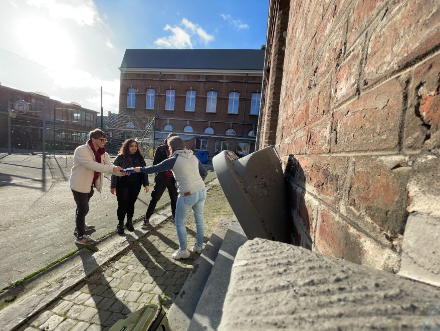
Une de nos plus belles interview
5 Top Task
& fonctions
Le résultat de
interviews ont démontré que ce qui
revenait souvent était la
volonté d’ajouter des verdures, ainsi qu’un espace pour travailler.
Suite à cela, on
pouvait choisir quel
Top task nous intéressait le plus parmis celle qu'on aurait voté.
On avait droit à 3 votes maximum.😇
6 Audits
J'ai
beaucoup aimé la préparations
de nos audits. C'est à
dire chercher
un peu partout des idées venant des architectes, des passionés par de la récup pour créer des bancs, des
supports pour les plantes. Dans la partie 7, on y trouve mon croquis qui
rentre en lien avec les images
ci-dessus.
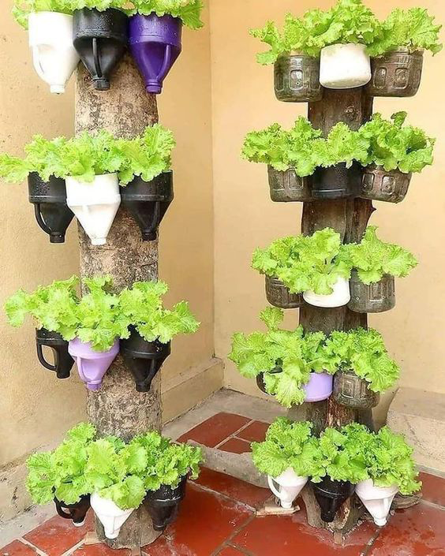
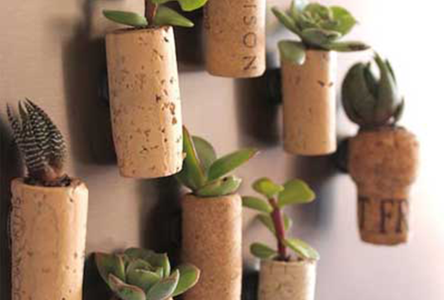
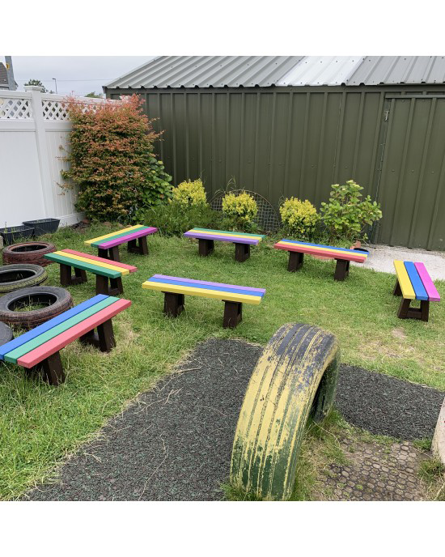
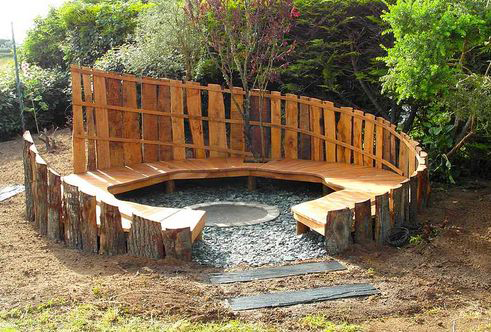
7 User
Journey
Les User journey, est utilisés pour les
recherches et améliorations selon
un ou des
problème(s) trouvé(s), cela permet d’améliorer nos projets et de trouver une solution plus optimale pour le
projet. Slidez pour naviguer dans les différentes situations
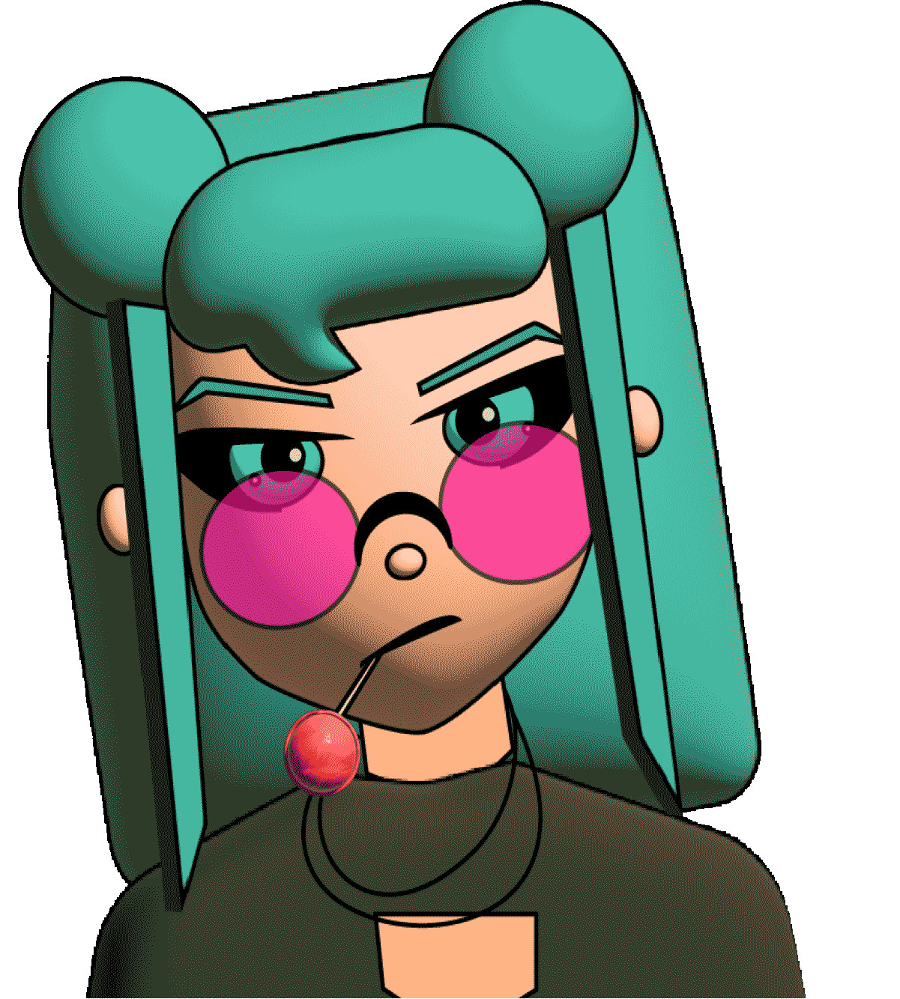
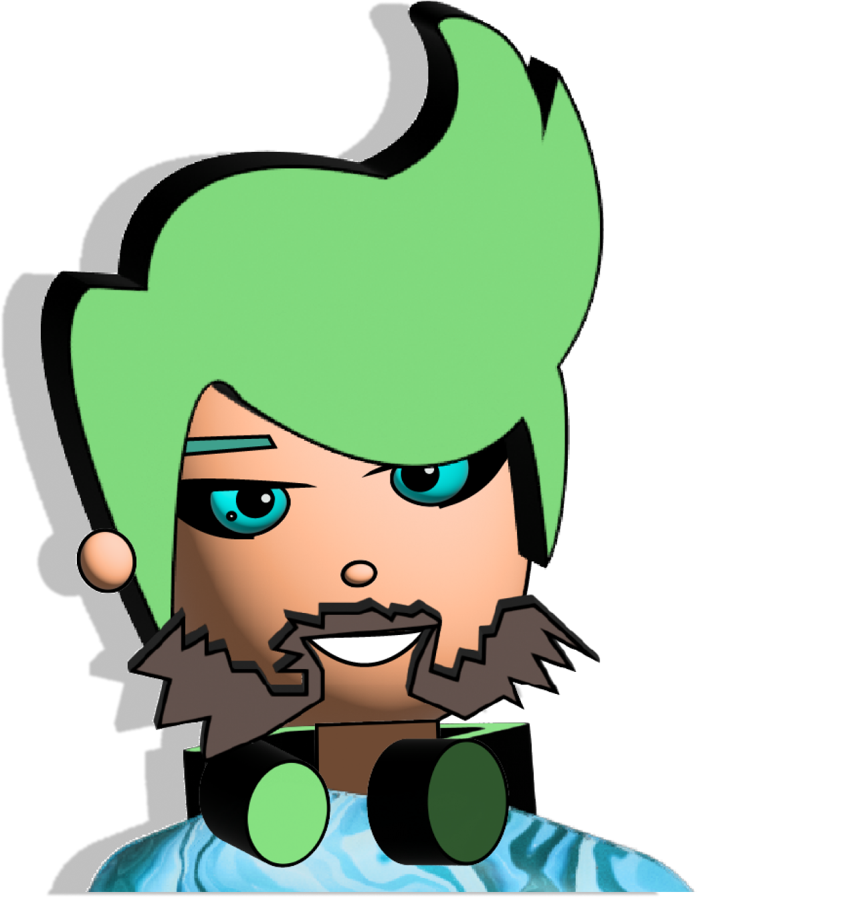
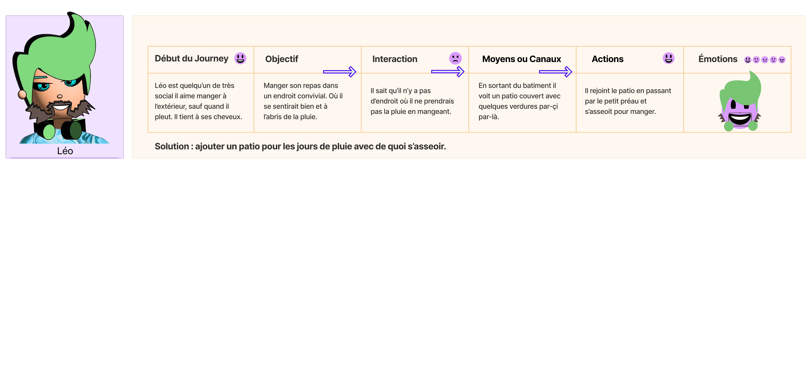
8 Croquis
Les croquis sont là pour prévisualiser nos idées
à partir des informations que l'on a précieusement recueillies.
Cette partie qui suit le User Journey m'a permis
de prévisualiser mes idées. Il suffit de rassembler ce que j'ai obtenu pour créer proprement mes éléments
verts ainsi que un
endroit pour se restaurer lorsqu'il pleut ou qu'il fait beau. J'ai trouvé pas mal d'éléments récupérable
pour permettre de se soulager quant à la question du budget. Où du moins, comment les 200 000€ vont
être
distribué.
RUX est un puzzle dont on
assemble les pièces
chaque jour.
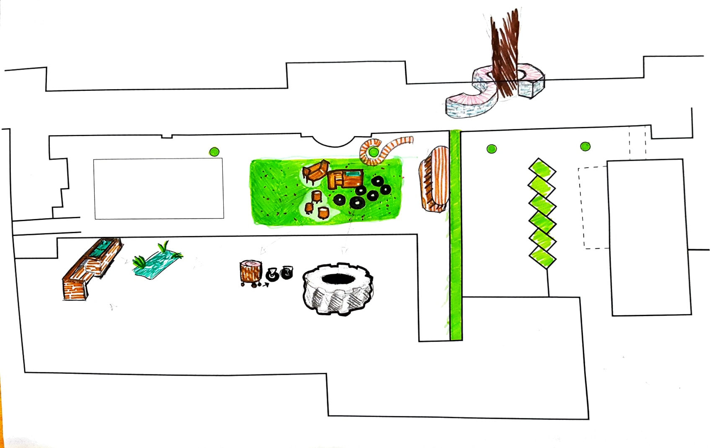
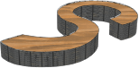
→ Représentation 3D d'un banc formant un S dont la boucle entoure l'arbre.
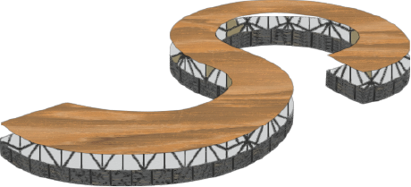
→ Le banc forme un S dont la boucle entoure
l'arbre.
Il est en bois pour la superficie du dessus, le reste pourrait des morceaux de pierres que l'on cellerait
avec des tiges métalliques, par exemple.
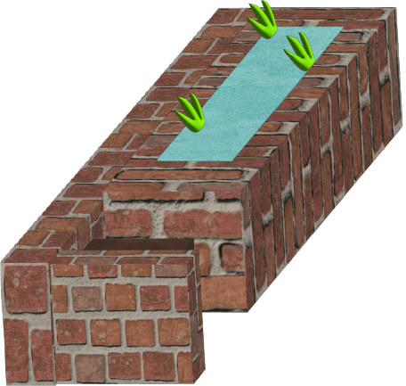
→ Le banc se trouve dans l'emplacement creux. À coté se trouve un
emplacement d'eau.
Cette idée d'utiliser des briques apporte un coté
frais. Le petit espace rectangle remplis d'eau et de végétation est situer à coté du banc en bois qui
pourrait nous procurer une sensation de calme.
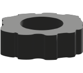
→ Un gros pneu posé au sol et que l'ont peut tirer.
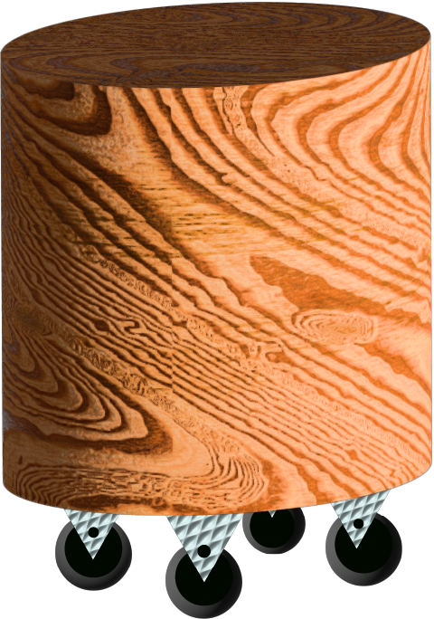
→ Tabouret contenant des roulettes
Un couteau à bois, des vis des roulettes et le
plus beau rondin de bois suffit à créer un tabouret mobile !
9
Intégration
Et c’est à ce moment précis que
l'on ralenti.
Je prends conscience des impasses qui se sont mis peu à peu sur mon chemin
en codant.
Tout d'abord il y a eu le burger menu. La navigation avait un fond bleu, et était placée de façon latérale,
sur le coté gauche du mobile. Mais en le testant sur le téléphone, je me suis
bien vite rendue compte que ça n'était pas facile d'accéder aux différents liens avec une main.
On navigue très peu souvent sur un smartphone en ayant celui-çi posé sur un
bureau. On ressent très vite le besoin de le maintenir en main pour avoir une libertée de controle. C'est
pourquoi elle se trouve en bas. J'ai fais en sorte que l'utilisateurs (et moi même lors des phases de
tests), puisse navigué librement et rapidement. De plus, je l'ai remontée pour qu'elle soit au-dessus des
menus principaux (comme le bouton "retour en arrière" et le bouton "Home") affichés sur les smartphones.
Finalement, cet atelier m'as appris à mieux gérer
ma méthode de travail. Je trouvais intéressant d'aller directement voir les utilisateurs en face à face pour
qu'ils me parlent d'eux, leurs vécus, leurs ressentis. J'aime beaucoup ces échanges sociaux et avec un
objectif derrière ça rend l'atelier plus divertissant. J'ai du m'adapter à pas mal de situation, mais je les
ai surmonté. Ensuite ces ajouts d'éléments 3D de la cour, je trouvais vraiment chouette de proposer quelques
prototypes basés sur toutes nos recherches.